Panel walkthrough
This page covers install, every triage flow on the built-in fictional sample, and live mode. Everything runs in the browser; nothing leaves the machine. The security review covers what IT checks before the trial.
Memos read from the page, groups, flags, drafts, and the action log live in this Chrome profile on this computer. Rounds makes no network requests. The manifest forbids them, and the font is bundled so nothing at all is fetched.
Grouping is plain word matching, printed in full inside the panel. Auto-drafted replies and patient-facing features are explicitly out of scope for the pilot.
Install
Open chrome://extensions, switch on Developer mode (top right), choose Load unpacked, and select the margin-extension folder from the delivery. Then click the Rounds icon in the toolbar; the panel docks beside whatever page is open.
With no CareLogic tab open, the mode chip says Sample and the panel loads nine sample memos so you can try every flow on this page right away. The welcome sheet covers the three things worth knowing before the first click; Got it hides it permanently (with an undo).
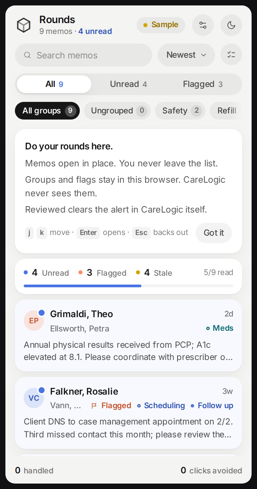
Inbox
Each memo is one sheet: client name, age of the alert, sender, group marks, and the actual narrative (CareLogic's own list only shows boilerplate), so triage happens from the list instead of behind six clicks. The overview strip's Unread, Flagged, and Stale numbers are buttons; each filters the list. Ages past four weeks turn amber.
- Filled dot next to a group name: you set it by hand. It is yours until you remove it.
- Hollow dot: a word rule applied it. Rules never override you; manual wins.
- Ungrouped in the pill row is the working queue: memos nothing has sorted yet.
Keyboard: j/k move, Enter opens, / jumps to search, Esc backs out of anything, in order.
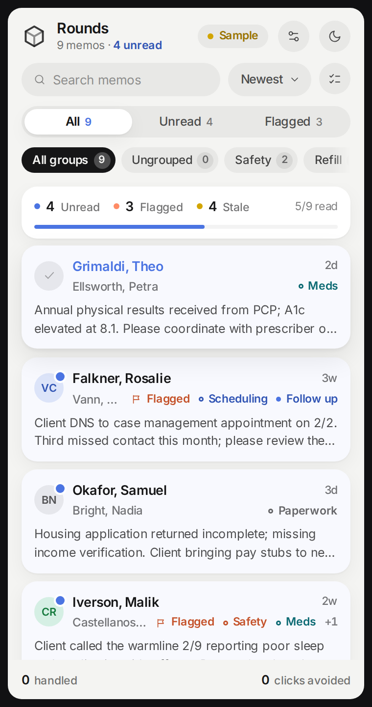
Why it grouped
Open the Merriweather memo. The Refill · auto chip came from the refill word rule, matching words already in the memo: refill, pharmacy, prior auth. Press the chip body and the panel shows its evidence: which rule, and which exact words it matched.
- Keep promotes the group to manual: the filled dot is now yours and no rule change can take it away.
- Remove (or the chip's ✕) deletes the group and records an override: that rule will never re-apply to that memo, across every rescan and reload. False positives are corrected once.
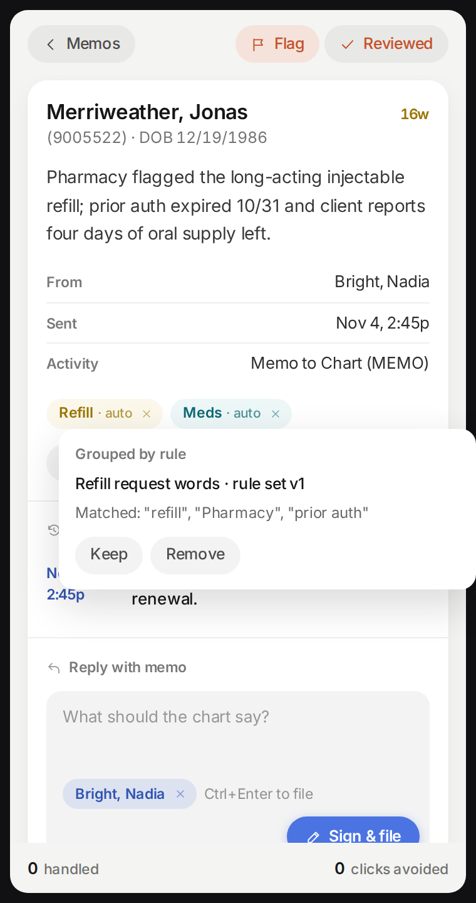
Selection
Hover any row and its avatar becomes a check circle; click it to start selecting. Ctrl-click (Cmd on Mac) toggles rows directly, Shift-click selects a range, and the checklist button beside the search field enters selection mode explicitly. The footer swaps its tally for the selection bar: count, All n (select everything in the current filter), Group, Reviewed, and exit.
Search, sort, and every filter stay live while selecting, and the selection survives them; the count shows (n not shown) when selected memos are filtered out of view, and actions still apply to all of them.
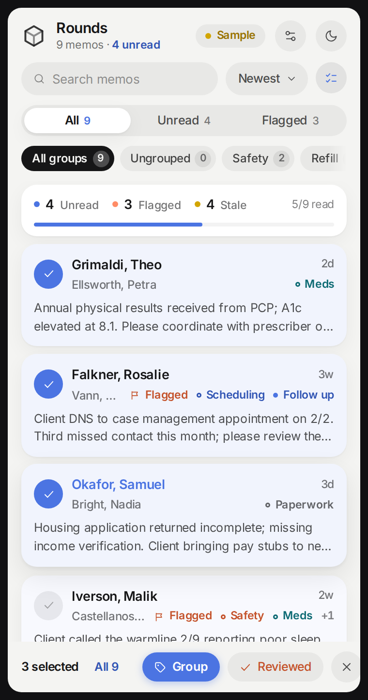
Grouping
Press Group. The sheet lists all six groups with the selection's current state on the right: a check when every selected memo has the group, a dash when some do. Tapping a row adds the group to all of them (or removes it from all of them); the sheet stays open so groups can stack, and every tap gets its own toast with Undo.
This is the manual override in both directions: hand-placed groups that rules can never disturb, and one-tap removal that rules remember from then on.
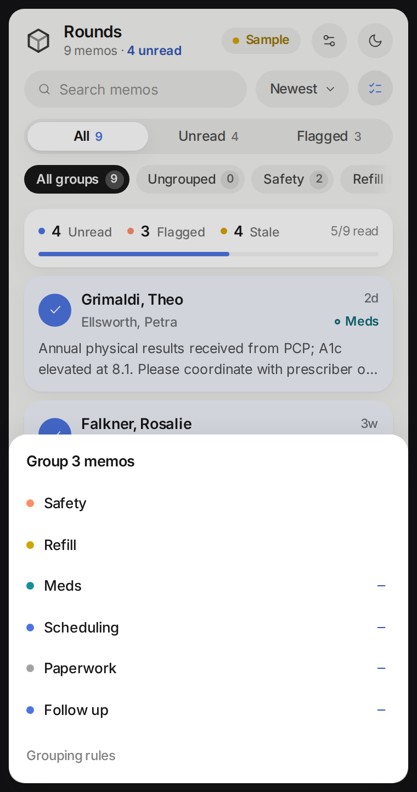
Moving
Filter to a group first (say Paperwork), then select and press Group. Because you are standing inside a group, the sheet becomes a move: Move 3 out of Paperwork. Tapping a destination adds it and removes Paperwork in one step; the rows visibly leave the filtered view, and one Undo reverses both sides.
Quick demo: filter to Ungrouped, press All n, group them, and the working queue drains to zero.
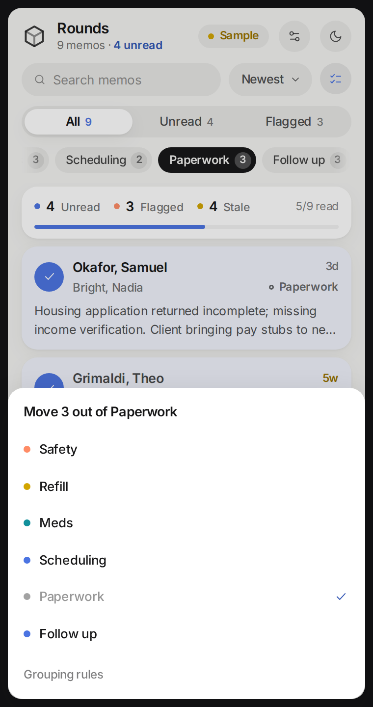
Reviewed
Reviewed is the one action that reaches into CareLogic's own list: it clicks the alert's Remove link, exactly as you would. The very first press pauses to say so, in place (Reviewed clears this alert in CareLogic's list too) with Clear alert and Keep. Answer once; it never asks again.
- In sample mode, clears are instant and every one has Undo.
- In live mode, bulk clears arm first: the button changes to Tap again to clear 5 in CareLogic and a second press confirms. Rows that can't be matched for sure are skipped and reported, never guessed at.
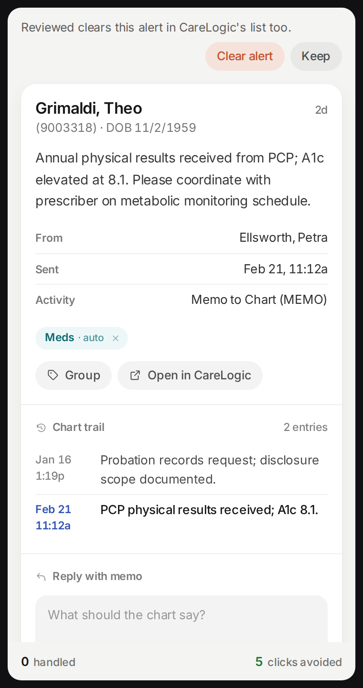
Filing
Write the narrative in the composer (Ctrl+Enter files; plain Enter is a newline, because clinical notes have paragraphs). Sample mode then walks CareLogic's real five-step filing sequence (service document, tracking memo, entry, electronic signature, file-and-notify), including a signature field that is used once and never stored, exactly like the EHR's own signature screen.
In live mode the same button is labeled Write into memo form: it types your narrative into CareLogic's own field and stops. Review and submit happen in the EHR; Rounds never signs and never submits on its own.
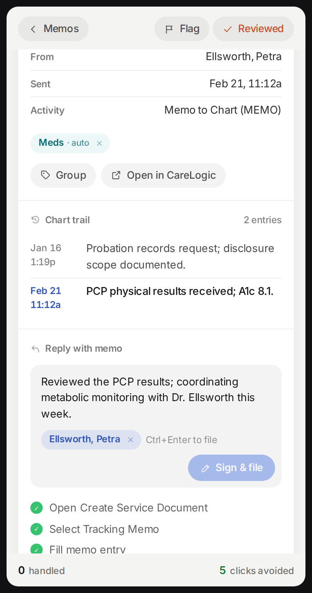
Data & privacy
Press the mode chip (or the sliders button in the header). One scrollable view holds everything IT will ask about: connection state and last-read freshness, the pause switch, the complete grouping vocabulary with per-rule switches and live match counts, your recorded overrides, plain-language passages on what Rounds reads / writes / sends (sends: nothing), the exact host list from the manifest, a byte-level inventory of what is stored on the machine, and an action log of every click and write the panel performed in CareLogic (chart IDs only, refusals included).
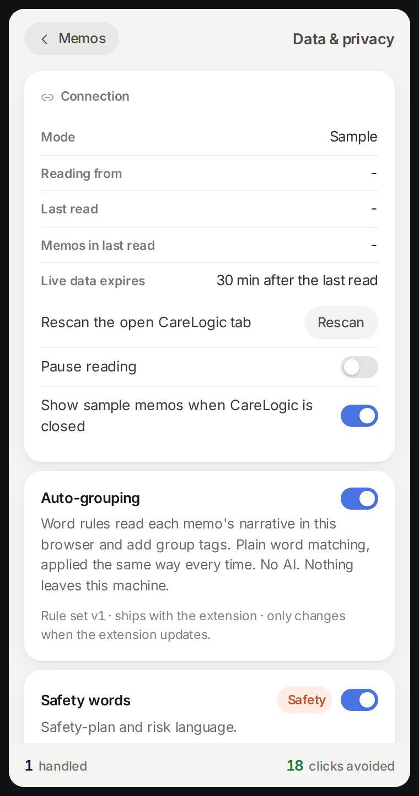
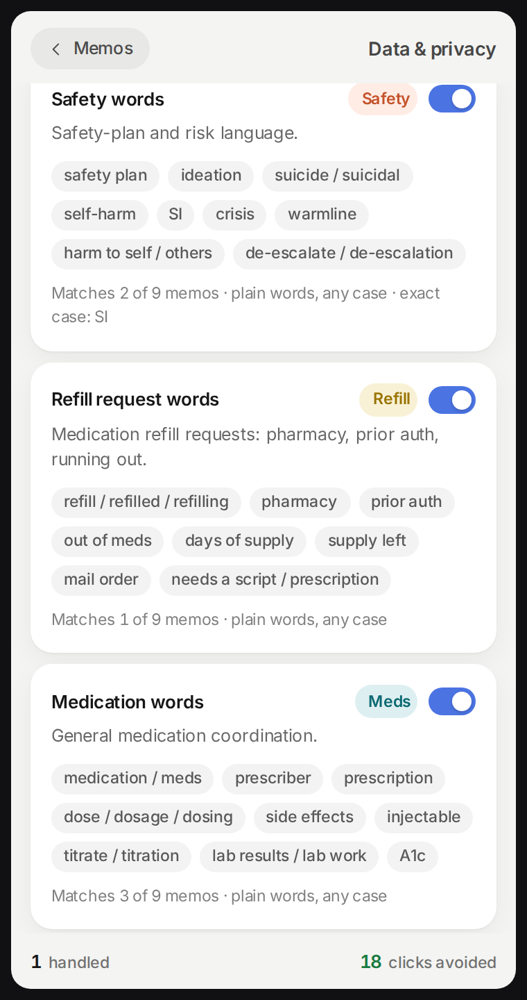
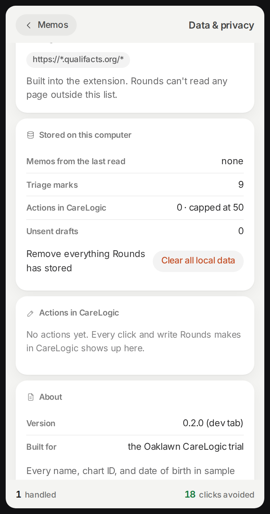
Live mode
Open CareLogic's My Alerts page in the same window and the chip turns green Live: rows now come from the page, the sample memos go away for good, and Open / Reviewed / Write drive CareLogic's own links and fields, addressed by client identity re-resolved at click time; ambiguous matches refuse rather than touch the wrong chart. Closing the tab keeps the last read on screen with host actions disabled; thirty minutes later it expires. The trial build pins host_permissions to the agency's exact CareLogic hostname before distribution.
Dark theme is built in. The toggle is in the header, and the dark inbox is the same information in the same places.
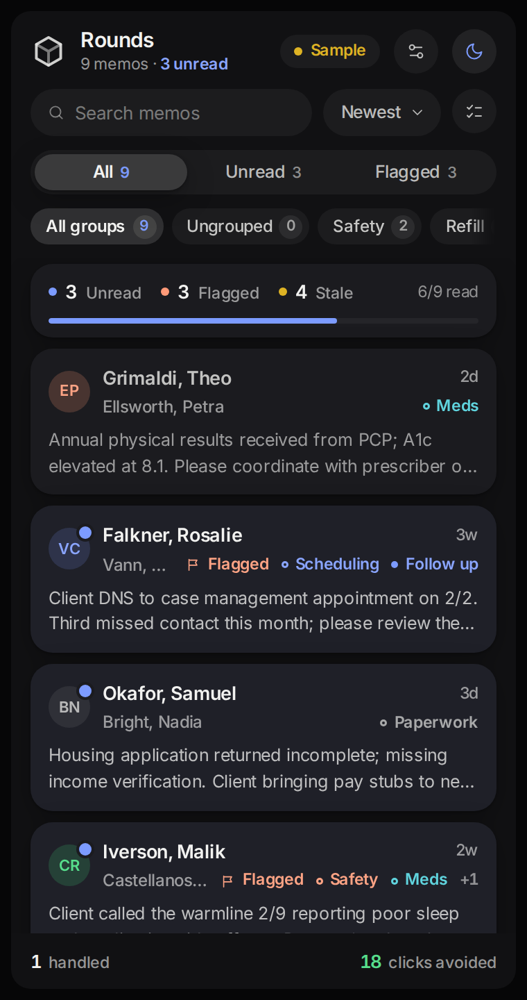